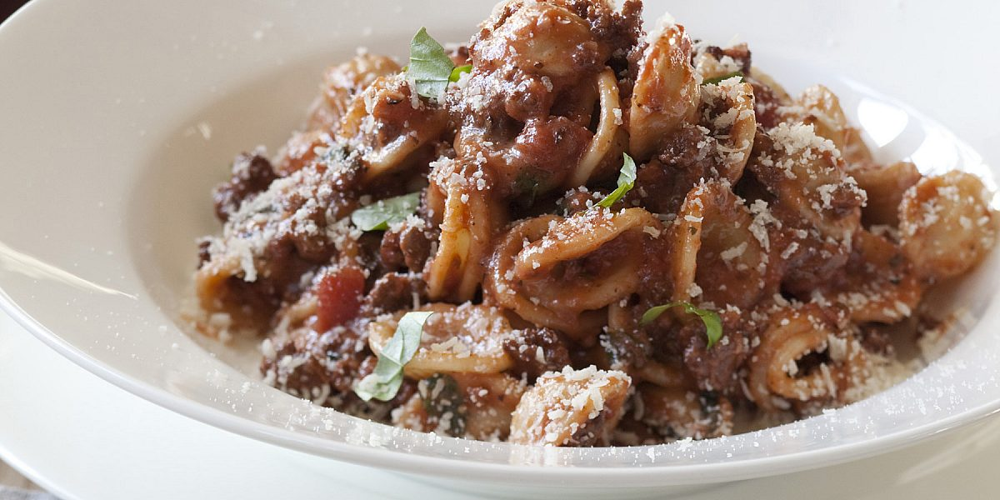

Bolognese

Description:
An easy to make yet delicious meal. Pasta with meat sauce.
Ingredients
- Good olive oil
- 1 pound lean ground sirloin
- 4 teaspoons minced garlic (4 cloves)
- 1 tablespoon dried oregano
- ¼ teaspoon crushed red pepper flakes
- 1¼ cups dry red wine, divided
- 1 can (28 ounces) crushed tomatoes, preferably San Marzano
- 2 tablespoons tomato paste
- Kosher salt and freshly ground black pepper
- 1 pound dried pasta, such as orecchiette or small shells
- ¼ teaspoon nutmeg
- ¼ cup chopped fresh basil leaves, lightly packed
- ¼ cup heavy cream
- Freshly grated Parmesan cheese
Directions
- Heat 2 tablespoons of olive oil in a large (12-inch) skillet over medium-high heat.
- Add the ground sirloin and cook, crumbling the meat with a wooden spoon.
- Cook for 5 to 7 minutes, stirring occasionally, until the meat has lost its pink color and has started to brown.
- Stir in the garlic, oregano, and hot red pepper flakes and cook for one minute.
- Pour the wine into the skillet and stir to scrape up any browned bits.
- Add the tomatoes, tomato paste, 1 tablespoon salt, and 1½ teaspoons pepper, stirring until combined.
- Bring to a boil, lower the heat, and simmer for 10 minutes.
- Meanwhile, bring a large pot of water to a boil, add a tablespoon of salt and the pasta and cook according to the directions on the box.
- While the pasta cooks, finish the sauce. Add the nutmeg, basil, and cream to the sauce and simmer for 8 to 10 minutes.
- When the pasta is cooked, transfer it with a slotted spoon or sieve to the pan with the sauce, saving the cooking liquid.
- Cook for one minute, add the remaining ¼ cup of wine, and cooking liquid, if necessary to make enough sauce.
- Serve hot with Parmesan on the side.